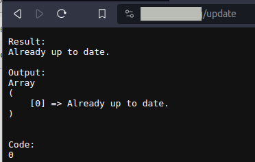

return function () {
header("Content-Type: text/plain");
$output = "";
$code = "";
$res = exec("cd .. && git pull", $output, $code);
echo "Result:\n";
print_r($res);
echo "\n\n";
echo "Output:\n";
print_r($output);
echo "\n\n";
echo "Code:\n";
print_r($code);
};

targets
- build
- test
- metrics
- backup
- deployment
test
- php unit tests
-
mocking, data providers, asserts,…
-
js test
metrics
- test coverage (total, diff)
- bug finder (phpstan)
- requirements (clean code, max file size, ...)
deployment
- compress, upload, replace
- configuration (token replacement)
- db migrations
- cache warmup
composer.json
{
"scripts": {
"phpunit": "vendor/bin/phpunit --display-warnings --display-skipped --display-deprecations --display-errors --display-notices",
"coverage": "vendor/bin/phpunit --coverage-html build/reports/html --coverage-clover build/reports/clover.xml",
"csfixer": "vendor/bin/php-cs-fixer fix --allow-risky=yes",
"phpstan": "vendor/bin/phpstan analyse src tests --memory-limit=1G",
"rector": "vendor/bin/rector process --no-ansi",
}
}
https://github.com/tempestphp/tempest-framework/blob/main/composer.json
csfixer, rector
- PHP Coding Standards Fixer (PHP CS Fixer)
- upgrades and refactors the PHP code
- ide integration available
- use as git hooks
Terms
- Stage
- Job
- Environments
- Variables (global, Environments, process)
- Artifact
stages:
- build
- deploy
workflow:
rules:
- if: '$CI_PIPELINE_SOURCE == "push" && $CI_COMMIT_REF_NAME == "main"'
when: always # Run pipeline for push event on main branch
- when: never # Prevent pipeline for all other cases
.frontend_node_modules-cache: &frontend_node_modules-cache
key:
files:
- 'frontend/package-lock.json'
- 'frontend/package.json'
paths:
- 'frontend/node_modules'
policy: pull
.api_composer-cache: &api_composer-cache
key:
files:
- 'api/composer.json'
- 'api/composer.lock'
paths:
- 'api/vendor'
policy: pull
.frontend_build-cache: &frontend_build-cache
key: build-$CI_PIPELINE_ID
paths:
- frontend/dist
policy: pull
build-job-php:
stage: build
image: php:latest
cache:
- <<: *api_composer-cache
policy: pull-push
before_script:
- apt-get update
- apt-get install zip unzip
- cd api
- php -r "copy('https://getcomposer.org/installer', 'composer-setup.php');"
- php composer-setup.php
- php -r "unlink('composer-setup.php');"
script:
- echo "Compiling the code..."
- php composer.phar install
- echo "Compile complete."
build-job-node:
stage: build
image: node:latest
cache:
- <<: *frontend_node_modules-cache
policy: pull-push
- <<: *frontend_build-cache
policy: push
script:
- echo "Compiling the code..."
- cd frontend
- npm install
- npm run build
- echo "Compile complete."
deploy-job-dev:
environment: dev
extends: .deploy-job
artifacts:
name: "dev"
paths:
- frontend.zip
- api.zip
when: on_success
deploy-job-live:
environment: production
extends: .deploy-job
when: manual
artifacts:
name: "prod"
paths:
- frontend.zip
- api.zip
when: on_success
.deploy-job:
stage: deploy
image: ubuntu:latest
dependencies:
- build-job-php
- build-job-node
cache:
- <<: *api_composer-cache
- <<: *frontend_node_modules-cache
- <<: *frontend_build-cache
rules:
- if: '$CI_COMMIT_REF_NAME == "main"'
before_script:
- apt-get update
- apt-get install zip unzip
- 'which ssh-agent || ( apt-get update -y && apt-get install openssh-client -y )'
- mkdir -p ~/.ssh
- eval $(ssh-agent -s)
- '[[ -f /.dockerenv ]] && echo -e "Host *\n\tStrictHostKeyChecking no\n\n" > ~/.ssh/config'
- (echo "$SSH_HOST") > ~/.ssh/known_hosts
- chmod 644 ~/.ssh/known_hosts
- ssh-add <(echo "$SSH_PRIVATE_KEY_BASE64" | base64 -d)
script:
- echo "Replace token"
- find ./frontend/dist/deployment -iname "main.*.js" | xargs sed -i -e "s~\[API_URL\]~$API_URL~g"
- echo "compress artefacts"
- zip -qr frontend.zip frontend/dist/deployment
- zip -qr api.zip api
- echo "upload artefacts"
- current_date_time=$(date +"%Y%m%d_%H%M%S")
- ssh -p$SSH_PORT "$SSH_USER@$SSH_HOST" "mkdir $TEMP_DIR/$current_date_time"
- scp -P$SSH_PORT -r api.zip "$SSH_USER@$SSH_HOST:$TEMP_DIR/$current_date_time"
- scp -P$SSH_PORT -r frontend.zip "$SSH_USER@$SSH_HOST:$TEMP_DIR/$current_date_time"
- echo "unzip artefacts"
- ssh -p$SSH_PORT "$SSH_USER@$SSH_HOST" "mkdir $TEMP_DIR/$current_date_time/src"
- ssh -p$SSH_PORT "$SSH_USER@$SSH_HOST" "unzip -q $TEMP_DIR/$current_date_time/api.zip -d $TEMP_DIR/$current_date_time/src"
- ssh -p$SSH_PORT "$SSH_USER@$SSH_HOST" "unzip -q $TEMP_DIR/$current_date_time/frontend.zip -d $TEMP_DIR/$current_date_time/src"
- echo "override application"
- ssh -p$SSH_PORT "$SSH_USER@$SSH_HOST" "cp -ru $TEMP_DIR/$current_date_time/src/frontend/dist/deployment/. $APP_PATH/frontend"
- ssh -p$SSH_PORT "$SSH_USER@$SSH_HOST" "cp -ru $TEMP_DIR/$current_date_time/src/api/src/. $APP_PATH/api/src"
- ssh -p$SSH_PORT "$SSH_USER@$SSH_HOST" "cp -ru $TEMP_DIR/$current_date_time/src/api/migrations/. $APP_PATH/api/migrations"
- ssh -p$SSH_PORT "$SSH_USER@$SSH_HOST" "cp -ru $TEMP_DIR/$current_date_time/src/api/templates/. $APP_PATH/api/templates"
- ssh -p$SSH_PORT "$SSH_USER@$SSH_HOST" "cp -ru $TEMP_DIR/$current_date_time/src/api/vendor/. $APP_PATH/api/vendor"
- ssh -p$SSH_PORT "$SSH_USER@$SSH_HOST" "cp -ru $TEMP_DIR/$current_date_time/src/api/config/. $APP_PATH/api/config"
- echo "remove unzip path"
- ssh -p$SSH_PORT "$SSH_USER@$SSH_HOST" "rm -rf $TEMP_DIR/$current_date_time/src"
- echo "execute db migration ans text migration"
- ssh -p$SSH_PORT "$SSH_USER@$SSH_HOST" "/usr/bin/php81 $APP_PATH/api/bin/console doctrine:migrations:migrate"
- ssh -p$SSH_PORT "$SSH_USER@$SSH_HOST" "/usr/bin/php81 $APP_PATH/api/bin/console app:migrate-text"
- echo "Application successfully deployed."